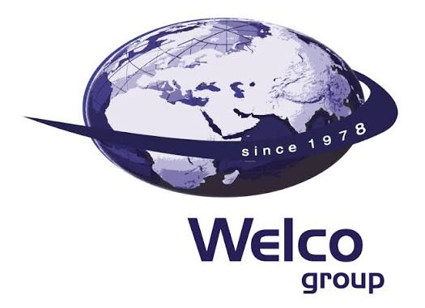
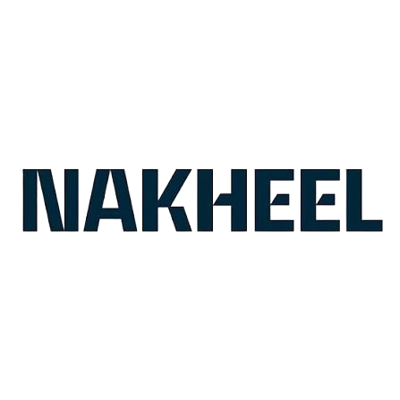
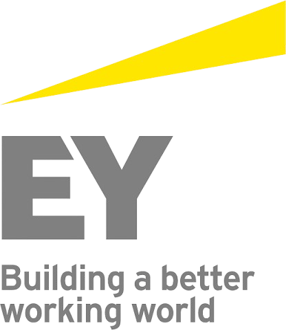

Career Path

Financial Advisor
Job Description
Serving as Program Manager and Senior Strategic Advisor, acting as a catalyst for governance enhancement and performance improvement across a major public-sector organization.
- Led the strategic alignment between executive business needs and technical ERP capabilities.
- Successfully established a culture of accountability and improved executive visibility into capital deployment.
Management Consultant
Job Description
Provided partner-level advisory, focusing on financial governance, organizational transformation, and risk management for diverse clients.
- Advised leadership teams on financial controls, process redesign, and enterprise risk management.
- Delivered actionable board-level reporting frameworks and sustainable operational models.

Business Advisor
Job Description
Appointed to assess business performance, diagnose organizational inefficiencies, and lead the design of a stronger operating model across a multi-entity group with regional presence.
- Conducted enterprise-wide diagnostic review, redesigned organizational structure, and led ERP rollout.
- Improved business planning disciplines and introduced operationally driven financial reporting for management decisions.

VP Finance- Project Financial Controls
Job Description
Held VP Finance role leading Project Financial Controls, overseeing financial governance of capital programs exceeding multi-billion-dollar values.
- Developed and implemented rigorous project financial controls from scratch.
- Delivered high-fidelity financial visibility to the Board of Directors.

Financial Planning & Reporting Manager
Job Description
As Financial Planning & Reporting Manager, delivered comprehensive five-year forecasts for world-class mega projects during a historic expansion phase.
- Engineered integrated five-year forecasts covering both financial and commercial dimensions.
- Provided the critical data backbone needed for Board-level reporting and investment decisions.
Controller of Accounts
Job Description
Directed financial strategies, budgeting, and performance management for large-scale petroleum operations, ensuring strict compliance and cost control.
- Implemented comprehensive performance measurement systems and variance analysis frameworks for operational budgeting.
- Optimized cash flow forecasting, eliminated structural inefficiencies, and safeguarded critical investments.

Senior Accountant
Job Description
Provided extensive external audit, financial governance, and advisory services to a wide portfolio of top-tier corporate clients.
- Led complex audit engagements, assessed risk management protocols, and delivered strategic insights to client management.
- Enhanced corporate financial integrity, minimized operational risks, and established robust internal control foundations.

Senior Accountant
Job Description
Established early career foundation in rigorous financial auditing, internal controls, and enterprise accounting standards at a top global firm.
- Executed detailed audits, identified systemic weaknesses in client financial reporting, and recommended robust internal controls.
- Built a strong foundation in forensic accounting, risk mitigation, and executive-level financial reporting.